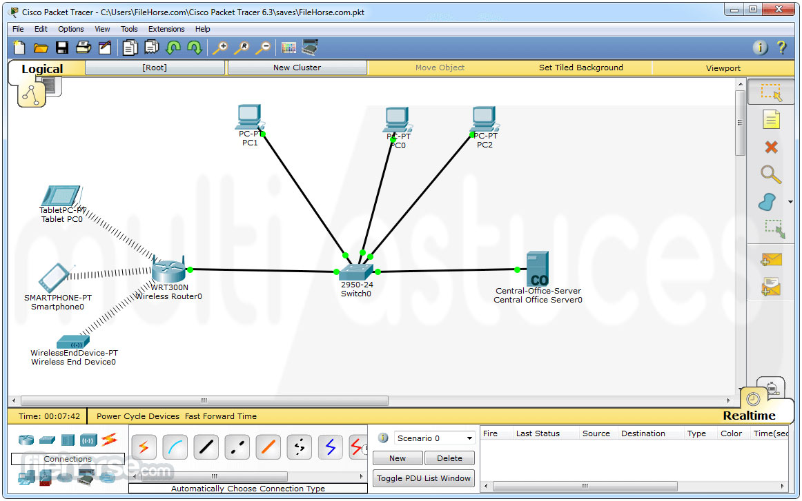

Jilian Maurel
Jilian Maurel
S'initier aux réseaux informatiques
Surement l'une des SAE les plus importante et formatrice du premier semestre. Elle nous a permis de comprendre le coeur de notre formation, à savoir la configuration d'un réseau.
Cette SAE nous a appris à créer virtuellement un réseau informatique et à le configurer entierement. Nous avons pour cela utilisé le logiciel Cisco Packet Tracer.

Tout d'abord nous avons appris à configurer des routeurs et des switchs de la marque Cisco, par des commandes, que nous avons ensutie relié entre eux. Nous les avons aussi relié à des terminaux afin de virtualiser un vrai réseau.
Nous avons ensuite pu tester notre réseau et le dépanner si certains equipements ne pouvaient pas communiquer entre eux.
Dans cette SAE j'ai appris à...
| ⚬ Configurer des équipements Cisco | ⚬ Trouver les erreurs et dépanner un reseau |
| ⚬ Créer un réseau LAN avec VLANs | ⚬ Schématiser un réseau d'entreprise en partant d'un cahier des charges |